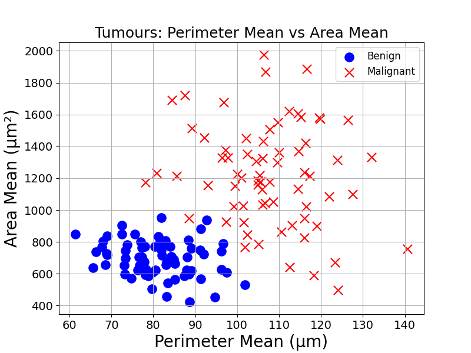
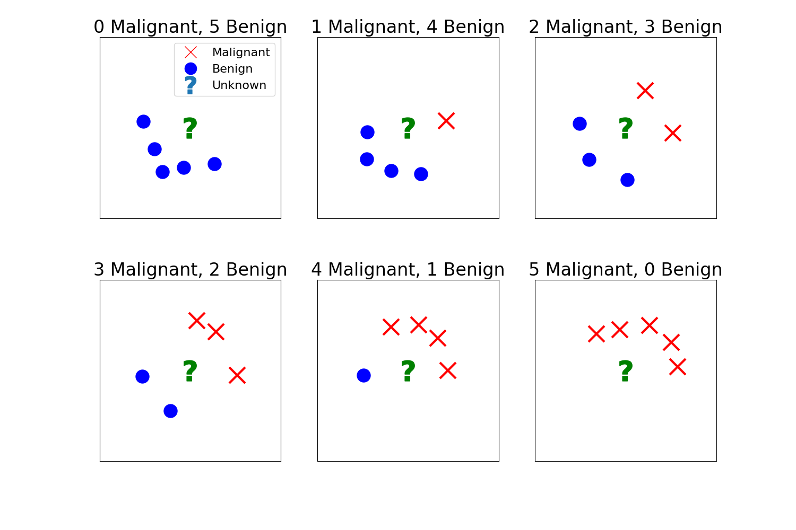

1 First Prediction with Machine Learning
With Machine Learning, we can generate predictions based on historical data. These predictions can solve problems in the real world.
Imagine this scenario: you are an early-career doctor and you receive a biopsy report. The lab lists two measurements from the cell nuclei of a suspicious mass — an average perimeter of 100 µm and an average area of 1200 µm². From just those two numbers: is the mass more likely benign (non-cancerous) or malignant (cancerous)?
If that vocabulary sounds unfamiliar, don’t worry — the question is straightforward: can we predict the diagnosis of this tumour from two measurements?
1.1 A visual approach
At first it might feel impossible. But suppose we have a database of many tumours, each labelled benign or malignant. A natural first step is to plot those examples using the two measurements from the report: perimeter and area. Each point on the chart would carry a label.

Figure code
import numpy as np
import matplotlib.pyplot as plt
from sklearn.datasets import make_blobs
benign_center = [80, 700]
malignant_center = [110, 1200]
n_samples = 70
X_benign, _ = make_blobs(n_samples=n_samples, centers=[(0, 0)], cluster_std=1, random_state=1)
X_malignant, _ = make_blobs(n_samples=n_samples, centers=[(0, 0)], cluster_std=1, random_state=2)
benign_std = [10, 120]
malignant_std = [12, 300]
X_benign = X_benign * benign_std + benign_center
X_malignant = X_malignant * malignant_std + malignant_center
plt.figure(figsize=(8,6))
plt.scatter(X_benign[:,0], X_benign[:,1], marker='o', color='blue', label='Benign')
plt.scatter(X_malignant[:,0], X_malignant[:,1], marker='x', color='red', label='Malignant')
plt.xlabel('Perimeter Mean (µm)', fontsize=16)
plt.ylabel('Area Mean (µm²)', fontsize=16)
plt.title('Tumours: Perimeter Mean vs Area Mean', fontsize=18)
plt.legend(fontsize=12)
plt.grid(True)
plt.xticks(fontsize=14)
plt.yticks(fontsize=14)
plt.show()We could then plot the new observation on the same chart. We label it with a question mark as its diagnosis is still unknown.

Figure code
import matplotlib.pyplot as plt
import numpy as np
from sklearn.datasets import make_blobs
benign_center = [80, 700]
malignant_center = [110, 1200]
n_samples = 70
X_benign, _ = make_blobs(n_samples=n_samples, centers=[(0, 0)], cluster_std=1, random_state=1)
X_malignant, _ = make_blobs(n_samples=n_samples, centers=[(0, 0)], cluster_std=1, random_state=2)
benign_std = [10, 120]
malignant_std = [12, 300]
X_benign = X_benign * benign_std + benign_center
X_malignant = X_malignant * malignant_std + malignant_center
plt.figure(figsize=(8,6))
plt.scatter(X_benign[:,0], X_benign[:,1], marker='o', color='blue', label='Benign')
plt.scatter(X_malignant[:,0], X_malignant[:,1], marker='x', color='red', label='Malignant')
plt.scatter(100, 1200, marker=r'$\mathbf{?}$', color='green', s=400, label='New Tumour')
plt.xlabel('Perimeter Mean (µm)', fontsize=16)
plt.ylabel('Area Mean (µm²)', fontsize=16)
plt.title('Tumours: Perimeter Mean vs Area Mean (New Tumour)', fontsize=18)
plt.legend(fontsize=12)
plt.grid(True)
plt.xticks(fontsize=14)
plt.yticks(fontsize=14)
plt.show()Would you now feel comfortable making an educated guess?
Look carefully: most of the unknown point’s nearest neighbours are malignant. From the data’s perspective, the most reasonable guess is that the tumour is malignant. That is not a certainty — it’s a probabilistic judgement based on the available examples.
1.2 From intuition to algorithms
How could computers do the same? Computers do not (yet) have eyes, or an understanding of distance and closeness.
A prediction algorithm would need to find an observation’s closest neighbours. To do so, it would need to measure the distance between this observation and others, and pick the ones with the shortest distance.
These distance calculations will be studied later. As a brain teaser, how would you calculate the distance between point A and B on this figure?
Hint: the Pythagorean theorem should be useful

Figure code
plt.figure(figsize=(6,6))
plt.scatter([1,5], [1,4], color=['blue','red'], s=100)
plt.plot([1,5],[1,4],'g-')
plt.text(1,1.2, 'A (1,1)', fontsize=16, ha='center')
plt.text(5,4.2, 'B (5,4)', fontsize=16, ha='center')
plt.xlabel('x', fontsize=16)
plt.ylabel('y', fontsize=16)
plt.title('Distance Between Two Points', fontsize=18)
plt.xticks(fontsize=14)
plt.yticks(fontsize=14)
plt.xlim(0, 6)
plt.ylim(0, 6)
plt.grid(True)
plt.show()Answer

To find the distance between point A \((1,1)\) and point B \((5,4)\) using the Pythagorean theorem, we can consider these points as two vertices of a right-angled triangle.
The horizontal distance (\(\Delta x\)) between the points is: \[ \Delta x = x_2 - x_1 = 5 - 1 = 4 \]
The vertical distance (\(\Delta y\)) between the points is: \[ \Delta y = y_2 - y_1 = 4 - 1 = 3 \]
According to the Pythagorean theorem, the square of the hypotenuse (the distance \(d\) between points A and B) is equal to the sum of the squares of the other two sides (\(\Delta x\) and \(\Delta y\)): \[ d^2 = (\Delta x)^2 + (\Delta y)^2 \]
Substituting the values: \[\begin{aligned} d^2 &= (4)^2 + (3)^2 \\ d^2 &= 16 + 9 \\ d^2 &= 25 \end{aligned} \]
To find \(d\), we take the square root of both sides: \[\begin{aligned} d &= \sqrt{25} = 5 \\ \end{aligned} \]
The distance between point A \((1,1)\) and point B \((5,4)\) is \(5\).With the list of closest neighbours, how would you make a prediction? Before coming up with an answer, think of how you would classify the following examples:

Figure code
import matplotlib.pyplot as plt
import numpy as np
def plot_neighbours(num_malignant, ax, total_neighbours=5):
num_malignant = min(num_malignant, total_neighbours)
num_benign = total_neighbours - num_malignant
angles_malignant = np.linspace(0, np.pi, num_malignant + 1, endpoint=False)[:-1] if num_malignant > 0 else []
angles_benign = np.linspace(np.pi, 2*np.pi, num_benign + 1, endpoint=False)[:-1] if num_benign > 0 else []
radius = 0.5
# Plot malignant neighbours
for i in range(num_malignant):
ax.plot(radius * np.cos(angles_malignant[i]), radius * np.sin(angles_malignant[i]), 'rx', markersize=10)
# Plot benign neighbours
for i in range(num_benign):
ax.plot(radius * np.cos(angles_benign[i]), radius * np.sin(angles_benign[i]), 'bo', markersize=10)
# Central unknown point
ax.plot(0, 0, 'g', markersize=18, marker=r'$\mathbf{?}$')
ax.set_title(f'{num_malignant} Malignant, {num_benign} Benign', fontsize=18)
ax.set_xticks([])
ax.set_yticks([])
ax.set_xlim([-1, 1])
ax.set_ylim([-1, 1])
ax.set_aspect('equal', adjustable='box')
# Create a 2x3 subplot layout
fig, axes = plt.subplots(2, 3, figsize=(15, 10))
fig.suptitle('Classification based on Nearest Neighbours', fontsize=20, y=0.98)
# Flatten the axes array for easier iteration
axes = axes.flatten()
for i in range(6):
plot_neighbours(i, axes[i])
# Add a legend to the first subplot
axes[0].plot([], [], 'rx', markersize=10, label='Malignant')
axes[0].plot([], [], 'bo', markersize=10, label='Benign')
axes[0].plot([], [], ' ', markersize=18, marker=r'$\mathbf{?}$', label='Unknown')
axes[0].legend(loc='upper right', fontsize=12)
plt.subplots_adjust(top=0.9)
plt.show()As you may have figured out, a simple majority vote should do. To generate predictions, count the number of neighbours belonging to each diagnosis, and assign the diagnosis with the highest number of neighbours.
That is it! We have our first model that can generate predictions about the world based on historical observations. This method could generate a diagnosis for any observation based on the value of the two measurements of its cell nuclei: average area and average perimeter.
This is only our first step into the fascinating world of Machine Learning. ML models can map any input, such as the above measurements, to any output, like tumour diagnosis.
Ready? Let’s get started.